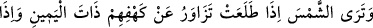
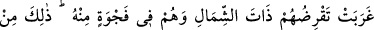
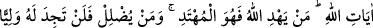
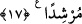

hayvan onda ortaktır. “Ve işinizde sizin için fayda ve kolaylık sağlasın” yâni sizin için
vusûl ve vuslat yolunu açsın. Nitekim et-Te’vîlâtü’n-Necmiyye’de böyle geçmektedir.
17. (Rasûlüm! Orada bulunsaydın) güneşi görürdün: Doğduğu zaman
mağaralarının sağına meyleder; batarken de sol taraftan onlara isâbet etmeden
geçerdi. (Böylece) onlar (güneş ışığından rahatsız olmaksızın) mağaranın bir
köşesinde (uyurlardı). İşte bu, Allah’ın âyetlerindendir. Allah kime hidâyet ederse,
işte o, hakka ulaşmıştır, kimi de hidâyetten mahrum ederse artık onu doğruya
yöneltecek bir dost bulamazsın.
Ey Muhammed ya da bu hitaba muhâtab olmaya elverişli olan kimse, Orada
bulunsaydın “güneşi görürdün:”
Burada kasdedilen görmenin gerçekten meydana geldiğini bildirmek değil, aksine
‘mağara öyleydi ki onu görseydin güneşi şöylece görürdün’ anlamındadır.
Kâşifî der ki: “Rivâyet edilir ki gençler dağ tarafına gitme konusunda ittifak ettiler.
Çoban da onları mağaraya götürdü. Mağaraya yerleşince Hak Teâlâ onlara uyku verdi
ve hepsi orada uyudular.
Dakyanus iki üç gün sonra Efsus’a geri döndü ve gençlerin durumunu sordu. Onların
kaçtığını haber alınca onların babalarının getirilmesini emretti. Onlar: “Ey kral, bizim
malımızdan hayli akça alıp şu dağa sığındılar” dediler.
Dakyanus bir grup ile onların peşine gitti ve onları mağaranın içinde sığınmış buldu.
Onların uyanık olduğunu zannetti. Hepsinin orada ölmesi için mağaranın ağzının taşla
örülmesini emretti. Mağaranın kapısını sağlamca kapattılar.
Dakyanus’un yakınlarından iki mü’min gençlerin isimlerini ve hallerini taştan bir
levha üzerine nakşetti ve mağaranın duvarına koydu. Bunu, bir gün bir kimse oraya
ulaşırsa, onların hallerinden haberdar olsun diye yaptılar.”
Fakir (Bursevî) der ki: Bu durumda âyette zikredilen ‘doğduğu zaman mağaralarının
sağına meyletmesi, batarken de sol taraftan onlara isâbet etmeden geçmesi’,
mağaranın ağzının Dakyanus tarafından kapatılmasından önce olmuştur. Çünkü, âşikârdır
ki kapısı kapatılmış olan mağaraya güneş ışıklarının girip de meyletmesi ve isâbet
etmeden geçmesi düşünülemez.
Güneş “Doğduğu zaman” sığındıkları “mağaralarının sağına” mağaranın içine
doğru giren kimseye göre mağaranın sağ tarafına, yâni batıya gelen tarafına “meyleder;”